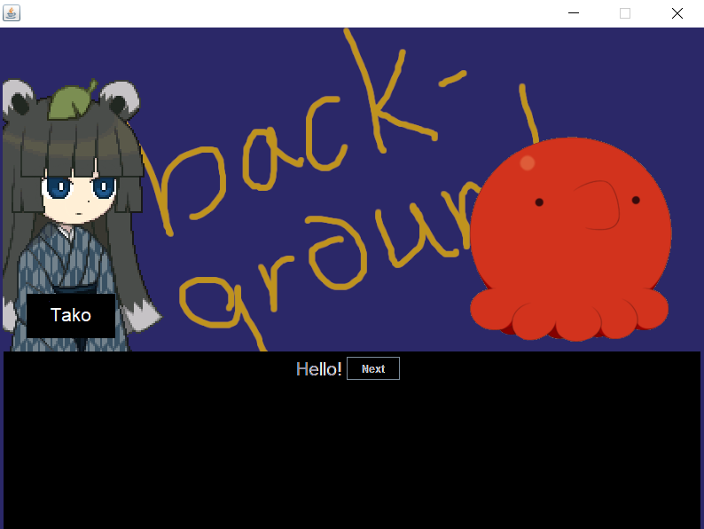

Hackathons I've Been To
StarterHacks 2019
Informal piece I tried to build; a simple program using the LeapPad technology to try and push a virtual button with the movement of a real hand.
The program would then use IFTTT to send a message, in this specific case a "hey I don't like you" to my friends that left me in the middle of the event.
I kept it simple because this was the first time I was using any of the technologies here. No images cause I lost the project ;-;
ElleHacks 2019
Worked with a couple of high school students on an environmental awareness "campaign"; a children's game with simple interactions. It was created
using Voiceflow, thus allowing the program to be able to run on both Google assistant and Alexa. The last page would link to a website, which was a
simple page including tips on what the user can do to be more environmentally friendly. I created the website and an associating github page, as well as
dealing with linking the main program to Amazon and Google's services.
Personal Side Projects
Website
Jan 2019
I first started this project as practice for my first co-op, the initial job title being 'Web
Developer'. Turns out that the job wasn't very front-end related, but I continued with it because
the aspect of having a website appealed to me.
The goal here was to get something simple up and running so I could easily show off other projects
I do in the future. I wanted this website to act as a medium for people to easily browse through what
I had to offer, but it ended up taking more time than I thought because I had little experience in
web development, so a lot of things were learned on the spot. That and it was hard to resist
trying out dozens of stylizing options.
RPG Pixel Game
2017
Final grade 12 computer science project with another partner. Comprised of most of the things I learned w
Background images and characters taken from Wadanohara
because I can't draw.


Cool Ideas
-
Stripping the RFID from a presto card and implementing it into something more accessable
Idea from here
-
homemade taiko machine